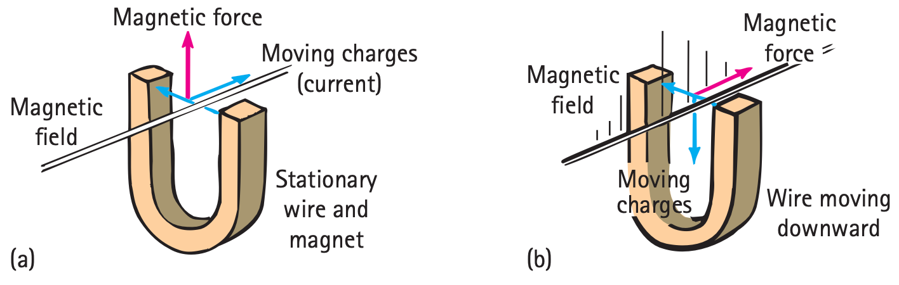

Generators and Alternating Current
Generators and Alternating Current
When one end of a magnet is repeatedly plunged into and back out of a coil of wire, the direction of the induced voltage alternates. As the magnetic field strength inside the coil is increased (as the magnet enters the coil), the induced voltage in the coil is directed one way. When the magnetic field strength diminishes (as the magnet leaves the coil), the voltage is induced in the opposite direction. The frequency of the alternating voltage that is induced equals the frequency of the changing magnetic field within the loop.
It is more practical to induce voltage by moving a coil than by moving a magnet. This can be done by rotating the coil (or loop) in a stationary magnetic field (Figure 25.6). This arrangement is called a generator. The construction of a generator is, in principle, identical to that of a motor. They look the same, but the roles of input and output are reversed. In a motor, electric energy is the input and mechanical energy is the output; in a generator, mechanical energy is the input and electric energy is the output. Both devices simply transform energy from one form into another.

It is interesting to compare the physics of a motor and a generator and to see that both operate according to the same underlying principle: that moving electrons experience a force that is mutually perpendicular to both their velocity and the magnetic field they traverse (Figure 25.7). We will call the deflection of the wire (motion as a result of current) the motor effect, and we will call what happens as a result of the law of induction (current as a result of motion) the generator effect. These effects are summarized in parts (a) and (b) of the figure (where, by convention, current and force arrows apply to positive charge). Study them. Can you see that the two effects are related?

We can see the electromagnetic induction cycle in Figure 25.8. Note that when the loop of wire is rotated in the magnetic field, there is a change in the number of magnetic field lines within the loop. When the plane of the loop is perpendicular to the field lines, the maximum number of lines is enclosed. As the loop rotates, it in effect chops the lines, so that fewer lines are enclosed. When the plane of the loop is parallel to the field lines, none are enclosed. Continued rotation increases and decreases the number of enclosed lines in a cyclical fashion, with the greatest rate of change of field lines occurring when the number of enclosed field lines goes through zero. Hence, the induced voltage is greatest as the loop rotates through its parallel-to-the-lines orientation.
Because the voltage induced by the generator alternates, the current produced is ac, alternating current.3 The alternating current in our homes is produced by generators standardized so that the current goes through 60 cycles of change each second—60 hertz.

Textbook Sections: 25.3
Learning Target: Students will explain how generators use electromagnetic induction to convert mechanical energy into electrical energy and why alternating current changes direction.
- I can explain that electromagnetic induction can produce voltage when magnetic conditions change.
- I can describe how rotating a coil in a magnetic field can induce voltage.
- I can explain that a generator converts mechanical energy into electrical energy.
- I can explain why the output of a common generator is alternating current.
- I can interpret a simple voltage-time graph for alternating current.
- I can compare the basic idea of a motor and a generator.